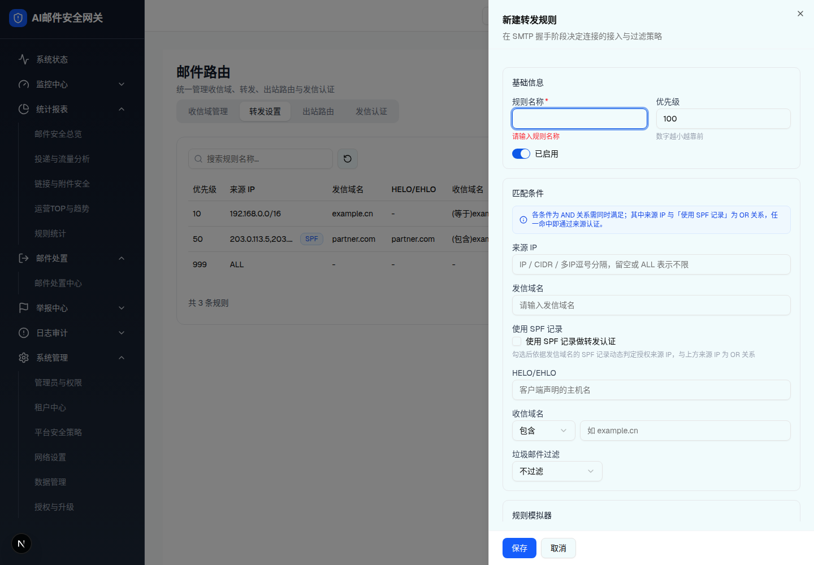
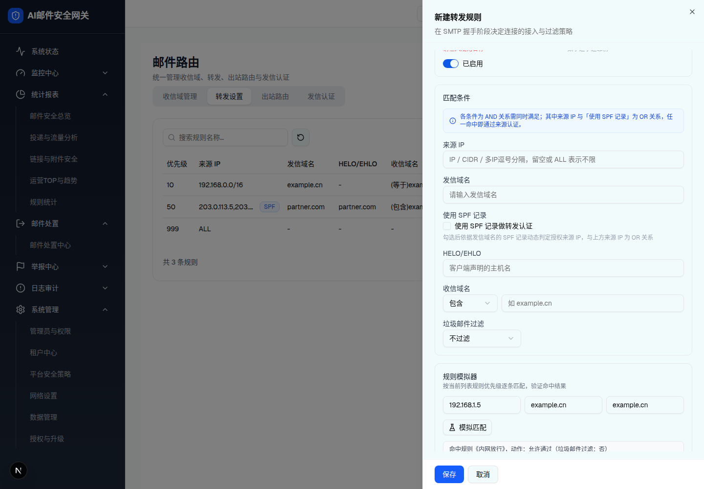
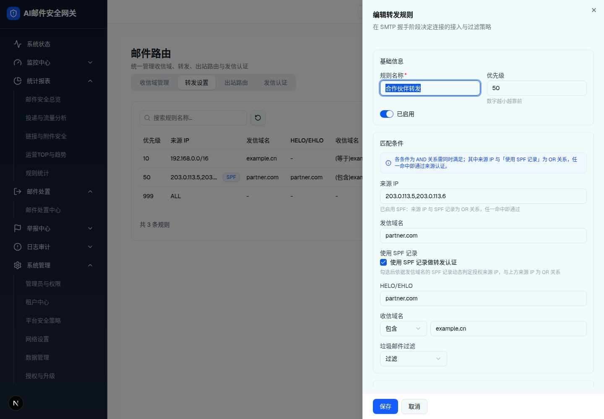

| 所属组件 | 2.4 转发设置 Tab |
| 触发路径 | 层级0 工具栏「新建」/ 行内「编辑」「模拟测试」（两者等价，§9-D5）→ 右侧 Sheet 抽屉 |
| 抽屉标题 | 「新建转发规则」/「编辑转发规则」+ 副标题「在 SMTP 握手阶段决定连接的接入与过滤策略」 |
预览可操作：启停 Switch 切换文案「已启用/已禁用」；「使用 SPF 记录」勾选后来源 IP hint 变化且发信域名转必填（红字「启用 SPF 认证时发信域名必填」）；收信域名匹配方式 Select（包含/等于/正则匹配）与垃圾邮件过滤 Select（不过滤/过滤）可展开选择；规则模拟器按 demo 同款逻辑对 3 条 mock 规则按优先级逐条匹配——试试 来源IP=192.168.1.5 / 发信=example.cn / 收信=example.cn（命中《内网放行》），或 203.0.113.5 / partner.com / example.cn（命中《合作伙伴转发》），或全空（不命中→默认策略文案）。


| 字段 | 规格（浏览器实测） |
|---|---|
| 规则名称 * | Input；必填「请输入规则名称」（列表不显示此列，§9-D2） |
| 优先级 | Input number，默认 100，hint「数字越小越靠前」；<1 报「优先级需为正整数」 |
| 启停 | Switch + 文案「已启用/已禁用」，默认启用 |
| 来源 IP | Input，占位「IP / CIDR / 多IP逗号分隔，留空或 ALL 表示不限」；勾选 SPF 后 hint「已启用 SPF：来源 IP 与 SPF 记录为 OR 关系，任一命中即通过」 |
| 发信域名 | Input「请输入发信域名」；SPF 勾选时必填 |
| 使用 SPF 记录 | Checkbox「使用 SPF 记录做转发认证」，hint「勾选后依据发信域名的 SPF 记录动态判定授权来源 IP，与上方来源 IP 为 OR 关系」 |
| HELO/EHLO | Input「客户端声明的主机名」（demo 模拟器不参与 HELO 匹配） |
| 收信域名 | 匹配方式 Select（包含=默认/等于/正则匹配，w-28）+ Input（占位「如 example.cn」，取收信域列表第一项） |
| 垃圾邮件过滤 | Select（不过滤=默认/过滤，w-40） |
| 规则模拟器 | desc「按当前列表规则优先级逐条匹配，验证命中结果」；三输入（来源 IP / 发信域名 / 收信域名）+「模拟匹配」按钮；结果框灰底：命中→「命中规则《名》，动作：允许通过（垃圾邮件过滤：是/否）」；不命中→「未命中任何规则，执行默认策略：按系统全局配置（拒绝/允许）」。匹配逻辑：禁用规则跳过；来源认证 = IP 命中（含宽松前缀匹配）OR SPF（简化为发信域包含）；发信域包含匹配；收信域按 等于/包含/正则；正则非法按不命中处理（无报错提示，§9-D11） |
| 底部操作 | 「保存」/「取消」；成功 Toast「转发规则已添加/已更新」 |
| 比对项 | demo 实际 DOM | 嵌入的 HTML | 是否一致 |
|---|---|---|---|
| 根节点 | div[role=dialog][data-state=open] | 同（中和 fixed） | 一致 |
| SectionCard 数 | 3（基础信息 / 匹配条件 / 规则模拟器） | 3 | 一致 |
| Info 提示条 | 蓝底 bg-blue-50/60 text-blue-700（AND/OR 语义） | 同 | 一致 |
| 模拟结果框 | 灰底「命中规则《内网放行》…」（条件渲染，simResult 非空） | 同 | 一致 |
| 节点数 | 79（含结果框；无结果态 78） | 79 | 一致 |

| 比对项 | demo 实际 DOM | 嵌入的 HTML | 是否一致 |
|---|---|---|---|
| 标题 | 「编辑转发规则」 | 同 | 一致 |
| SPF Checkbox | data-state=checked + 对勾指示器 | 同 | 一致 |
| 来源 IP hint | 「已启用 SPF：来源 IP 与 SPF 记录为 OR 关系，任一命中即通过」（条件渲染） | 同 | 一致 |
| 节点数 | 81 | 81 | 一致 |